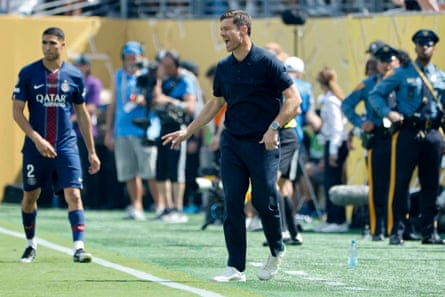

T his is the end. For Real Madrid, the best thing that could be said about their last game of the 2024-2025 season was that it was their last game of the 2024-2025 season. So in the makeshift marquee set up by the MetLife Stadium, Xabi Alonso said exactly that, and repeatedly. He had watched his team, who aren’t entirely his team yet, be taken apart by Paris Saint-Germain ; now he wanted to get home and “reset”, forget about it. Well, not forget exactly: the hurt might help, lessons learned. “I want this to have an impact but not drag us down,” he said. “In August we start 2025-26, which will be different.”
The way they fell was familiar, back to their recent past, their reality. “We suffered the way others have suffered against them,” Alonso said, and that was true, but it is not only PSG; it is Madrid too. This was their 68th game of the season and their 15th loss. They won only the Uefa Super Cup , a world away now, and the Intercontinental Cup against Pachuca in Qatar . In the league, Barcelona beat them twice, scoring four each time. In the cup, Barcelona put three past them; in the Super Cup, five . Arsenal scored three in the Champions League . PSG stopped at four because they didn’t need more.
The Club World Cup was a tournament and a testing ground. Alonso hadn’t been keen to take over in the US, but once it was made clear that he must, he described it as an opportunity to accelerate the processes he had planned, implement ideas early. The demand is always to win, exposed before the eyes of the world, but at least to begin with games were analysed as much through what was new, what was coming, as whether they lifted the trophy. The discourse from the new coach was recurring, all about collectivity, spirit, a structure. Every time he was asked about an individual, he turned to the group. Everyone must work, without exception.
There were details too, something developing: a shifting attitude and new formation that sometimes featured three at the back, Aurélien Tchouaméni playing what Alonso called a “hybrid” role, stepping in and out of the defence. Gonzalo García was a revelation. Dean Huijsen can really play. Fran García was good. Fede Valverde was released. Arda Guler may be a deep playmaker, occupying the position for which Madrid had no one else. The spaces between them narrowed. They were actually pressing sometimes.
They reached the semi-finals. Yes, they might have expected that. And no, they hadn’t beaten truly great teams. But Juventus and Borussia Dortmund are decent tests and, apart from a mad last 10 minutes in the latter game , were eliminated with an authority not seen for too long. Madrid had a manager. It was startling, and pretty grubby, how quickly Carlo Ancelotti – the coach who won it all – was condemned and the team considered fixed.
Ousmané Dembélé scored in PSG’s victory over Real Madrid as the Spanish team were exposed at the back time and again.Photograph: Aurélien Meunier/PSG/Getty Images
And then came PSG, and it all fell apart. That’s not pressing; this is pressing. Can you really say that a goal was coming, overdue even, when it is scored inside six minutes? You can when it is like this: by the time Fabián Ruiz scored the first, it was PSG’s fourth clear chance. Madrid couldn’t get to the ball or PSG’s players. “We didn’t manage to apply the manager’s plan,” Thibaut Courtois said. “We couldn’t press like them; from my point of view, we always arrived a little late, everyone out of position and that’s how they beat you. We weren’t close to them.”
The mistakes that led to the opening two goals were truly absurd from Raúl Asencio and Toni Rüdiger. There were other conditioning factors: Trent Alexander-Arnold and Huijsen were missing, one injured, one suspended. Valverde had to play at right-back. The formation was changed. And Kylian Mbappé was back. Now, it would be far too easy to say that Madrid lost the first time that Mbappé started but: Madrid lost the first time that Mbappé started. No, it wasn’t about him. But, yes, it kind of was. Which is the way it has been all season, his first in Spain. There’s something quite bizarre about wondering if a striker who scored 44 goals, the best debut campaign a Madrid player has ever had, was a success, but it’s not an entirely illegitimate question. “I came to win trophies,” he said, and he hasn’t.
Mbappé came to a team who malfunctioned in multiple ways and his significance is always magnified, distorted, for good and bad. Against PSG, the team that went and won it all as soon as he left, all the more so. Here it hit everyone, hard. There’s a symbolism that goes beyond his actual performance, but that doesn’t make it purely symbolic and there is something systemic there, too. Madrid hadn’t found a fit for him and Vinícius Júnior, whose form has not been the same and collapsed almost completely since he didn’t win the Ballon d’Or . Defeat in New York brought that, and other flaws, back to the surface.
“Today is a hostia that could help us learn, correct things and keep improving,” Courtois said. The hostia is the consecrated bread; in this context, it is a kick in the teeth, a massive blow. In its clarity, in how much it hurt, it could be helpful, no place to hide. Lessons came from both teams on the pitch, from what Madrid are and what, looking at PSG, they aspire to be. That this was no one-off but cruel confirmation of what has been seen all season may help. It cannot be ignored. No, things are not fixed so fast; they have to be dealt with properly, not patched over.
Xabi Alonso realises he has a big job to rebuild Real Madrid after a troubling season.Photograph: Jean Catuffe/Getty Images
“Sometimes it is good to see the errors, for that to help you in the future. If you keep tripping on the same mistake, it’s not intelligent,” Alonso said. And if he was already given an authority not always conferred on coaches, his ideas engaged with, so far at least, this was a reminder to keep listening. Often it is an excuse to turn on a coach but not here, not yet: only six of the 68 matches this season are his, after all. “He hasn’t had time to do anything,” Luis Enrique said in his defence.
“This is the last game of 2024-25, not the first of 2025-26,” Alonso said, and it was a recurring line. There might have been some self-preservation in saying so but there was also a message, a reminder of where they are coming from and how far they have to go, that there can be a new beginning, that failure can be left behind. If it’s not forgotten entirely. A reminder that there must be changes: in culture, dressing-room dynamics. At board level, the word “ego” is being discussed, an easy excuse perhaps, a handy distraction from failures higher up, but not insignificant. Alonso talked about wanting to “build a team that plays with unity, all together, that has feeling and spirit”.
He also talked for the first time about changes in personnel too, if briefly. Some will depart – Luka Modric, Lucas Vázquez, almost certainly Rodrygo – and additions must be made. Some positions are not adequately occupied while others are overbooked. Asked about signings, Alonso replied: “We haven’t talked much about the composition of the squad during the World Cup but now we are always open to talking about making improvements and there is space for that.
“Our new era is just beginning, there is still a lot of margin, lots of things we have to do better. Today hurts, we have to be self-critical, but this shows us things. We will take things from this match and from this World Cup. We leave here a better team, even if it is hard to say that right now. It can be a starting point for us, a way of beginning next season better. Today is the end of this season, not the start of next. This competition has told me a lot of things about what we are and what we have to improve. I leave here with many certainties. We will start from zero in August, when 2025-26 begins. Not from the 95th minute of today, but from zero.”